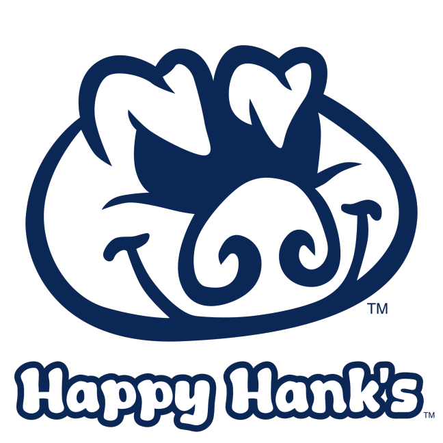
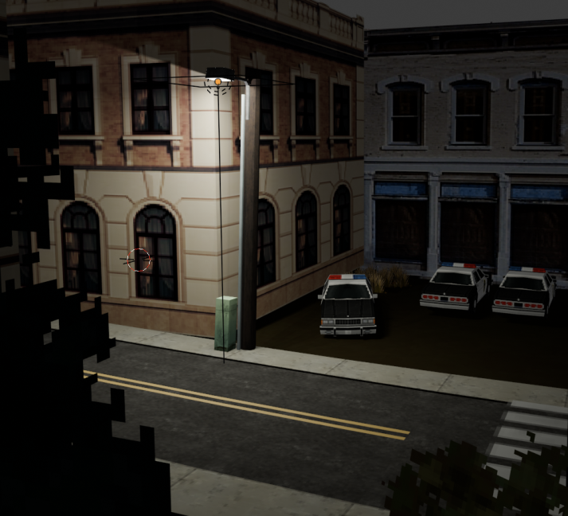
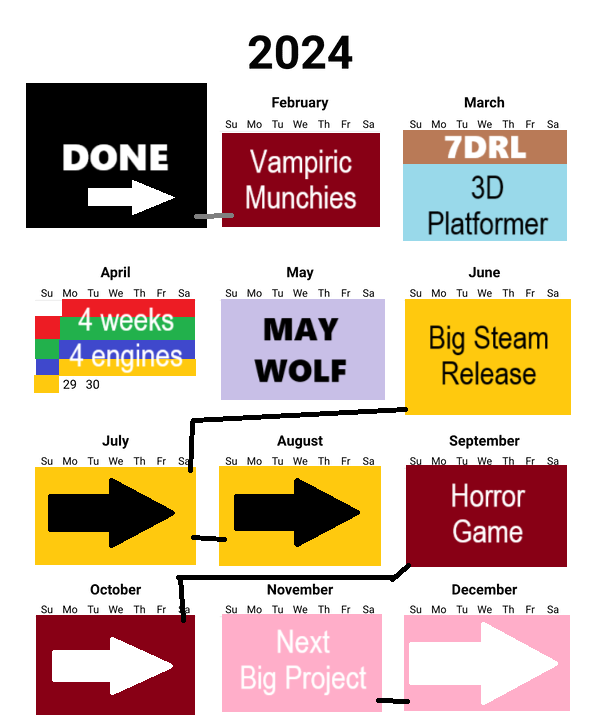

Status Report 02/01/2024 - Burning Out & Getting Back On The Saddle
Hello!
Matthew here, wrapping up January 2024 with a status report. I have formally decided that I want to do these monthly. Seems like a good balance of keeping y'all in the loop while also not getting bogged down by constantly writing these. So! Let's just jump straight into what's been going on. Starting with the bad (of course). >:3
So, bad news is that I have been very burnt out and having a hard time working on anything. However, I took a short break to just relax and play Celeste 64, and I am happy to say I am ready to get back on the saddle and get Vampiric Munchies done.
Speaking of Vampiric Munchies, even though I have been pretty burnt out, that doesn't mean that this project hasn't had any movement. I am now working with two other people to get this game done. Both also worked on Scaling Up Industries. Billy is back to do assets and Rye is back to do music and it's freaking poggers. So, instead of speaking for them, here is what Billy has to say about the game and it's progress:
"Well I’ve completed the fast food restaurant called “Happy Hank’s Drive-Thru” and I’m working on more decoration and signage including but not limited to the police station and the trailer park" - Billy
 I mean, I think Billy's work really speaks for itself. The passion and commitment he has shown to this project is inspiring and I am very happy to be working with him again. Same with Rye.
This project is still going strong and it is still on track to release sometime this month. Early next month at the latest. What happens after that was something I wanted to delve into a bit.
So, I have a problem. A problem I've been trying to solve for a while now. The problem is I want to make a LOT of different games lol. Which might not sound like a problem, but the problem isn't the desire, the problem is logistical. I am trying to ride a fine line between making games that are small and different that might not be the most commercially viable and also make bigger games that are more commercially viable without them taking away all my time from the smaller projects. It's a really hard thing to balance, and I have to do both to be able to continue to do this. Without the smaller projects, I would burn out a lot more and the smaller projects also do a lot for building community. Without the bigger projects, I wouldn't have money and without money I can't keep justifying spending as much time doing this. Which is unfortunate. I'd love to not have to worry about money and just make games all day everyday all the time, but I simply can't do that. So, this is the problem I have to solve. I also don't say this to make you feel bad about me or whatever lol, I am just trying to figure this out.
If you have any solutions you can think of, I'd genuinely love to hear them because it's been a problem I've been dreading for a while now lol.
Anyways, all this is to say also is that I have to manage my time very carefully to make sure I can get done all I want to. I can't just go with the flow and figure it out as I go along, I'd lose too much time from doing nothing. Which might seem kinda melodramatic but I honestly really just want to make as many games as possible lol.
So, this is the plan I have layed out for this year. It is rough and might be subject to change a bit depending on how these projects actually get along. Also, it doesn't include small weekend or shorter projects I might want to make for game jams.
Big productive year for Raccoon Formality. When I said 2024 was gonna be the year of the raccoon, I wasn't lying.
So yeah, that's about all I wanted to say, can't wait to talk to you next month when hopefully Vampiric Munchies will have been released and we can all revel in it's success.
Until next time, peace out.
- Matthew (Raccoon Formality)
TL:DR - Still working on Vampiric Munchies and I'm trying to solve and existential problem.